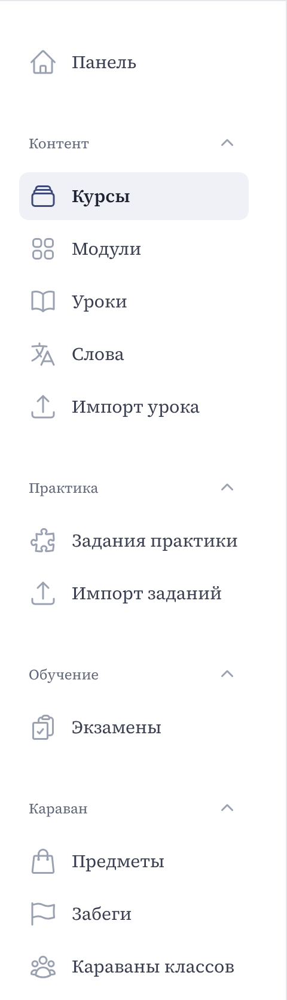
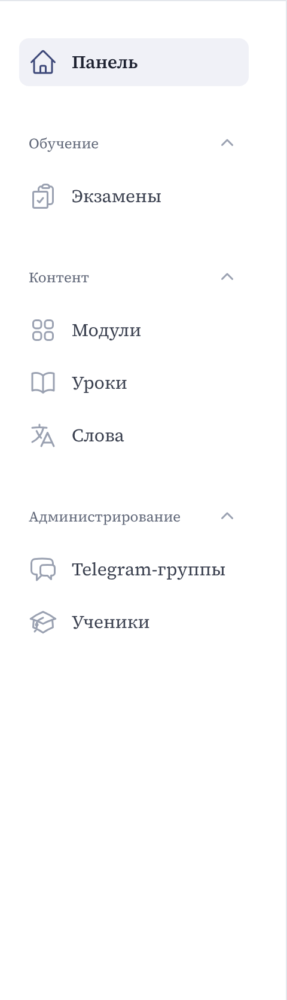

LexiFlow Pro — платформа для изучения английских слов в Telegram. Ученик занимается в мини-приложении и в чате с ботом, учитель проводит занятия и экзамены в Telegram-группе класса, учебный центр оплачивает Pro для своих групп. Всем этим управляют через две веб-панели.
| Панель | Адрес | Для кого | Что в ней делают |
|---|---|---|---|
| Панель администратора | /admin | администраторы платформы и учителя, которым администратор открыл доступ | курсы и слова, задания практики, ученики, группы, сотрудники, оплата и подписки, игра «Караван», рейтинг месяца, отчёты |
| Кабинет учебного центра | /org | владельцы и учителя учебных центров | группы и ученики своего центра, приглашения, задания, отчёты, оплата тарифа центра |
У панелей разные входы и разные учётные записи. Сотрудник центра, который входит в /org, не попадает в /admin, пока администратор не выдаст ему роль в разделе Сотрудники. Ученики не входят ни в одну из панелей.
В панели /admin две роли — Администратор и Учитель. Роль выдаётся в разделе Администрирование → Сотрудники (глава «Сотрудники и роли»). Отдельной роли «суперадминистратор» нет: все администраторы равны по правам. Кроме роли, у каждой учётной записи есть флажок Активен.
| Кто | Как попадает в панель | Что видит |
|---|---|---|
| Администратор (активный) | пароль и обязательный код из приложения-аутентификатора | всю платформу: все разделы меню, обе вкладки главной панели |
| Учитель (активный) | только пароль | свои группы, учеников этих групп, их экзамены, списки модулей, уроков и слов для справки; главную панель с цифрами своих групп |
| Сотрудник со снятым флажком Активен | не входит: панель отвечает так же, как на неверный пароль | ничего |
| Сотрудник без роли (например, только владелец центра) | не входит в /admin; работает в /org | ничего в /admin |


Таблица составлена по правилам доступа в коде панели. «Нет» значит, что пункта нет в меню, а прямая ссылка на страницу отвечает ошибкой 403 («Доступ запрещён»).
| Раздел меню | Администратор | Учитель |
|---|---|---|
| Панель (главная) | вкладки «Учёба» и «Деньги», все блоки | пять блоков с цифрами своих групп, без вкладок |
| Контент → Курсы | создание, правка, смена статуса | нет |
| Контент → Модули, Уроки, Слова | создание и правка, переводы, примеры | только списки, без открытия и правки |
| Контент → Импорт урока | да | нет |
| Практика → Задания практики, Импорт заданий | да | нет |
| Обучение → Экзамены | все экзамены, просмотр результатов | групповые экзамены своих групп, просмотр результатов |
| Караван → Предметы, Забеги, Караваны классов | да | нет |
| Оплата → Подписки, Промокоды, Учебные центры, Платежи, Заказы, Транзакции провайдеров | да | нет |
| Администрирование → Сотрудники | да (себя удалить нельзя) | нет |
| Администрирование → Рейтинг месяца, Удержание | да | нет |
| Администрирование → Telegram-группы | все группы: активация, курс, язык бота, учителя | список своих групп, без правки |
| Администрирование → Ученики | все ученики, карточка, блокировка, удаление аккаунта, пилот практики, алгоритм повторений | активные участники своих групп: имя, username, группы, число повторений и ответов; без действий |
«Свои группы» учителя — это Telegram-группы, где он указан в поле Учителя (раздел Telegram-группы, глава «Telegram-группы»). Если учитель не видит учеников, первым делом проверьте это поле.